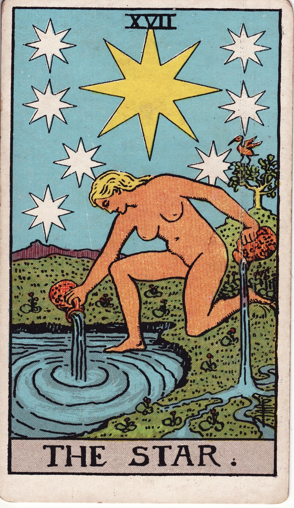
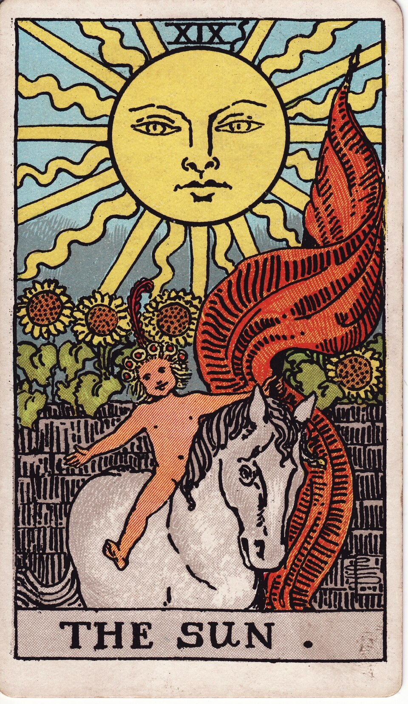

ТАРО · РАЙДЕР — УЭЙТ — СМИТ
Всё начинается
с вашего вопроса.
Сделайте паузу. Прислушайтесь к себе.
Выберите расклад и откройте карты.



THE ART OF LOOKING WITHINВаш расклад
08 способов посмотреть глубжеУ каждого вопроса — своя глубина.
Выберите расклад, чтобы начать.